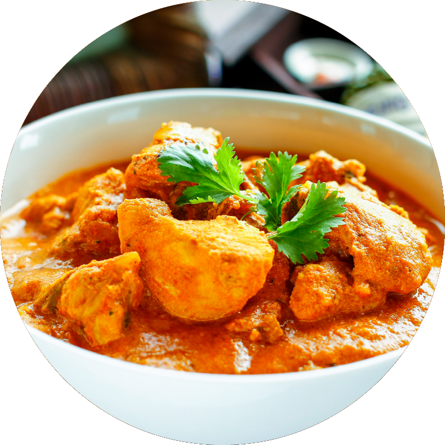
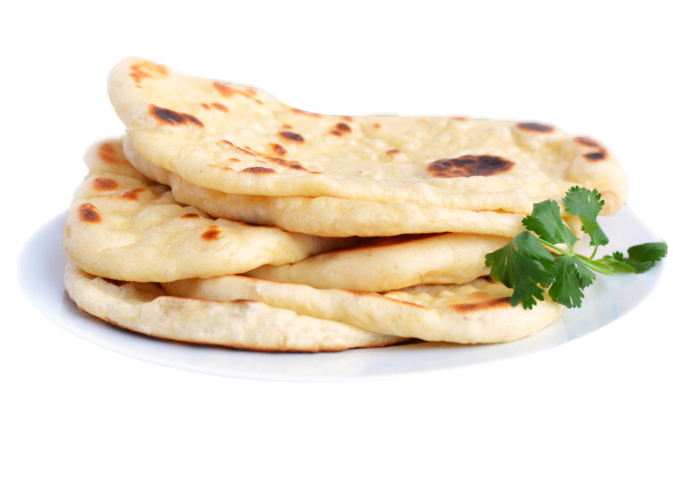

Biryani is a celebration of all that is great about Indian food – the heady aromas, the vibrant colours, the fluffy rice and those addictive curry flavours. Make this Chicken Biryani with your protein of choice – or try a vegetable biryani!
Biryani is one of the most popular dishes in South Asia and among the South Asian diaspora, although the dish is often associated with the region's Muslim population in particular.[3] Similar dishes are also prepared in other parts of the world such as in Iran, Iraq, Myanmar, Thailand, and Malaysia.[4] Biryani is the single most-ordered dish on Indian online food ordering and delivery services, and has been labelled as the most popular dish overall in India.[3][5]
Butter Chicken is probably one of the most popular Indian chicken recipes liked by all for its mild flavour and deliciously rich gravy. I wouldn’t be surprised if this is the most popular dish in Indian restaurants and so, this is a restaurant-style Butter Chicken Recipe.

The curry was developed at the Moti Mahal restaurant in the Daryaganj neighbourhood of Old Delhi in the 1950s, after the Partition of India[7] by Kundan Lal Jaggi and Kundan Lal Gujral,[8] who were both Punjabi refugees from Peshawar, British India.[9][10][2] The curry was made "by chance" by mixing leftover tandoori chicken in a tomato gravy, rich in butter (makhan).[11] In 1974, a recipe was published for "Murgh makhanii (Tandoori chicken cooked in butter and tomato sauce)".[citation needed]
Naan (/nɑːn/) is a leavened, oven-baked or tawa-fried flatbread, that can also be baked in a tandoor. It is characterized by a light and fluffy texture and golden-brown spots from the baking process.[1] Naan is found in the cuisines of Central Asia, South Asia, Southeast Asia, and the Caribbean.[2][3][4]
Composed of white or wheat flour and combined with a leavening agent, typically yeast, naan dough develops air pockets that contribute to its fluffy and soft texture. Additional ingredients for crafting naan include warm water, salt, ghee and yogurt, with optional additions like milk, egg, or honey. Baking powder or baking soda can be used instead of yeast to reduce the preparation time for the bread.
click here to go top
Mutton curry
Mutton curry (also referred to as kosha mangsho,[1] lamb curry,[2] or goat curry[3][4]) is a dish that is prepared from goat meat (or sometimes lamb meat) and vegetables.[5] The dish is found in different variations across all states, countries and regions of the Indian subcontinent and the Caribbean.
Mutton curry was originally prepared putting all the ingredients together in a earthen pot and slow cooking the whole curry by wood fire on a clay oven.[6] Today it is cooked using pressure cookers and slow cookers after briefly sautéing all the ingredients and spices in a big wok.[6] The steadily cooked mutton becomes more tender than normally cooked mutton. Mutton curry is generally served with rice or with Indian breads, such as naan or parotta.[7] The dish can also be served with ragi, a cereal.